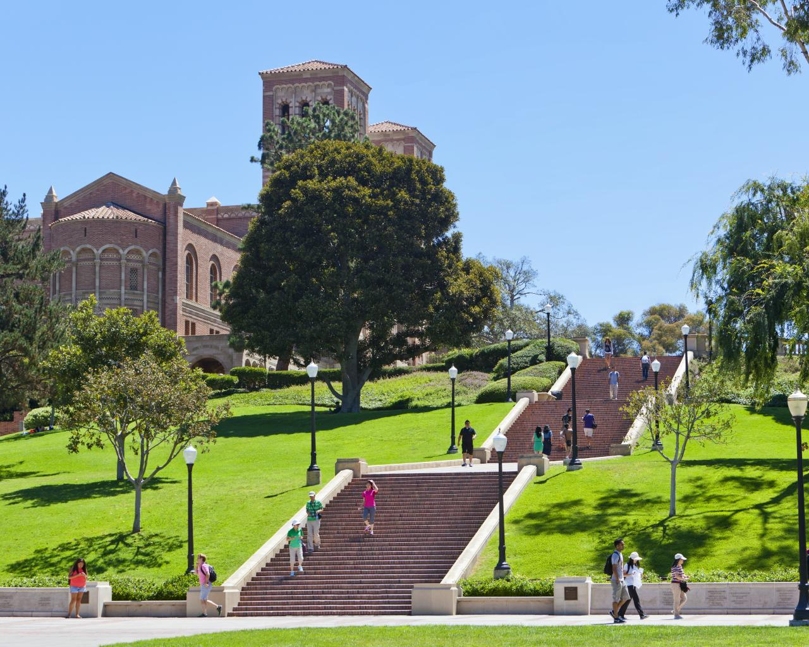

WebLab 02 Colleges
The University of California, Los Angeles (UCLA) is a public research university in the Westwood district of Los Angeles, California, United States.


WebLab 02 Colleges |
||||
|---|---|---|---|---|
| Name | Picture | Location | Overview | Personal Interest |
| University of California Los Angelos (UCLA) |  | The University of California, Los Angeles (UCLA) is a public research university in the Westwood district of Los Angeles, California, United States. |
UCLA is a public, comprehensive university. Founded in 1919, it later became the first "branch campus" of the University of California. An internationally renowned research university, UCLA emphasizes interdisciplinary teaching and exposes undergraduates early to research opportunities with faculty. Students can take part in initiatives in the arts, stem cells, nanoscience, international studies, and the environment among other areas. The campus community is diverse and promotes creative and collaborative achievements, debate and critical inquiry, and an open and inclusive environment. UCLA's 419-acre historic campus is located in the Westwood Village area of Los Angeles. | I'm interested in UCLA for a few reasons. Ever since I was little my dad had been a huge advocate for UCLA, and I naturally got into the family spirit. My father attended UCLA, and it would rock to keep a family tradition. Additionally, I love southern California weather, and I'd imagine it would be hard to stay far away from home for long periods of time. | University of Michigan | |
The University of Michigan (U-M, UM, UMich, or U of M), frequently referred to simply as "Michigan," is a public research university in Ann Arbor, Michigan, United States. | The University of Michigan is one of the great public research universities of the United States, located in vibrant Ann Arbor. U-M is distinguished by its unique alchemy of academic prestige, rich history and traditions, public ethos, and vibrant setting. Since 1817, U-M has been a global model of a diverse and comprehensive academic institution. It is recognized as one of the top 20 universities in the world, and one of the top public universities in the U.S. Students from all 50 states and 120 countries are mentored by some of the world's most influential faculty and join a community of more than 500,000 living alumni. Nineteen schools and colleges offer intellectual rigor in a cross-disciplinary environment encouraging inquiry in the classroom, undergraduate research, and broad opportunity. | University of Michigan has always been a personal favorite of mine. A majority of my extended family lives in Michigan, and many of my uncles attended this college. I love the campus and the moss ridden stone buildings really suite my style. The vibrant setting and environment caught my eye and I fell in love. |
| Notre Dame | |
Notre Dame's campus is located in Notre Dame, Indiana, an unincorporated community in the Michiana area of Northern Indiana, north of South Bend and four miles (6 km) from the Michigan state line. | Notre Dame College is a private, church-affiliated liberal arts college. Founded in 1922 as a college for women, it became co-educational in 2001. Its 53-acre campus, with architecture in a Tudor-Gothic style, is located in South Euclid, 15 miles from central Cleveland. | Being a Catholic myself, Notre Dame has always been in my head. My grandfather, that I love dearly, went to Notre Dame, and made a lasting impact on how I felt about this college. I take pride in being Irish and I feel as if being a part of a community like this would really make me feel at home. |
| University of Washington | |
Located in the University District neighborhood (known as the U District) just north of downtown Seattle, the University of Washington is a cutting-edge research university with a long-standing history as one of the oldest public institutions on the West Coast. | The University of Washington, founded in 1861, is a public, comprehensive institution. UW has earned an international reputation for its research in such fields as Asian languages and literature, cell biology, computer science, forestry, international studies, nursing and physics. Its 703-acre campus, graced by Collegiate Gothic architecture, meandering paths and immaculately landscaped grounds, is located in a residential section of Seattle five miles from downtown. | Every time I've been to Seattle I didn't want to leave. I love the weather and the atmoshpere around the campus. The relative closeness to the city is very appealing, and functional. I think the pinkish trees and buildings are sweet and would love to go to this college. |